The Past ...
prior 1990At some point, Steve's parents met. By all accounts they seem to have gotten on quite well. Some other stuff also happened.
Originally created in 2021 as a platform for academic projects, this site has evolved alongside my web development journey.
Over the summer of 2023/24, the platform was re-built to showcase my work and projects to potential employers and clients.
At the end of 2024, having completed studies, I looked to apply learned lessons by re-examing my UI.
From foundational web technologies to advanced frameworks such as NextJS and NodeJS, each section reflects my commitment to continuous learning and professional growth. As I explore new technologies to expand my skillset, this portfolio serves as both a testament to my journey and a dynamic showcase of my web developer projects.
This portfolio aims to demonstrate my growing expertise in modern web technologies, featuring projects that highlight my skills in front-end development, programming, and database management. Through my work and studies, I have worked to develop proficiency in creating practical, user-centered solutions.
(My current plan is to re-do this site in React, once I gain more proficiency with that JavaScript framework - in its' present state, the site uses vanilla JS to perform DOM manipulation for the animations.)
3 ... 2 ... 1 ...
Let's go !!
Hi !! I'm
Hello and thank you for visiting my online portfolio, where innovation meets practical experience in web development and programming. I am excited to showcase the skills and projects that I have developed since making the life-changing decision to return to full-time studies.
After two decades in the transport industry, I reached a pivotal moment and chose to pursue a long-held passion for IT and programming - an interest that had been with me since my teen years.
In 2019, I took the bold step of returning to studies, a journey that culminated in earning Diplomas of Advanced Programming (2023) and Front-End Web Development (2024). This transition has allowed me to combine my extensive professional experience with cutting-edge technical skills.
Throughout this journey, I have worked to develop my knowledge in numerous programming languages and frameworks, with a particular enthusiasm for JavaScript and its modern frameworks. I've also gained valuable experience working directly with clients, gathering requirements, and implementing solutions based on user feedback. My involvement in team projects has honed my abilities in project planning, UI development, and collaborative problem-solving.
Since completing formal studies, I continue to expand my skill-set through tutorials and online courses, delving into frameworks such as ExpressJS and ThreeJS. From crafting responsive websites to developing mobile applications and complex database solutions, my work demonstrates both technical versatility and a commitment to continuous learning.
I trust that the projects showcased here reflect my practical approach to problem-solving, my ability to adapt to diverse technical challenges, and my dedication to creating efficient, user-focused solutions.
In 2019, I made the decision to re-skill in software development. Over the ensuing four (and a bit)-year period of full-time study, I worked to grow my knowledge base from programming fundamentals through to advanced web development.
Select a diploma for further information:


Since ending formal studies, I have aimed to further my knowledge with online tutorials and courses in HTML/CSS and JavaScript frameworks such as React. Indeed, this website was created from scratch using learned skills and (where necessary) researching features that I wished to incorporate.
2023 - Diploma of Information Technology (Advanced Programming), North Metropolitan TAFE
This intensive programming diploma expanded my development skills across multiple technologies and frameworks. The program included advanced PHP development with the Laravel framework, database programming with MongoDB, and extensive Python programming for IoT and other applications.
The second semester focused on data analysis using PowerBI and Python libraries like NumPy and Pandas. The culminating project involved mobile application development using Dart and Flutter, working in a team environment to deliver a complete solution.
As part of this course, I completed MongoDB certification (M001 and M003), gaining expertise in NoSQL database design and implementation.
2020 - Certificate IV in Programming, North Metropolitan TAFE
This foundational program introduced me to core programming concepts and principles. Using Java as the primary language, I learned essential programming structures and gained a solid understanding of Object-Oriented Programming (OOP) fundamentals.
The course included comprehensive database training with SQL Server, where I learned CRUD operations and basic database design principles. I also explored game development, creating my first project using the Unity engine and C#, from which I gained valuable insights into practical software development.
Despite pandemic-related challenges extending the course duration from June 2019 to late 2020, this program laid the crucial groundwork for subsequent software development studies.
2023 - Certificate of Excellence, North Metropolitan TAFE
Awarded in recognition of outstanding academic achievement in the Diploma of Information Technology (Advanced Programming). This award reflected consistent high performance across all units and significant contribution to team projects.
2024 - Diploma of Information Technology (Front-End Web Development), North Metropolitan TAFE
This advanced diploma focused on modern front-end development technologies and best practices. The program provided in-depth training in contemporary web frameworks including React and Next.js, along with comprehensive coverage of responsive design principles and API integration.
A highlight of the course was my role as coordinator for the 2024 TAFE Grad Show website. Leading this real-world project allowed me to apply acquired skills in a practical setting while managing team collaboration and project delivery.
This diploma rounds out my formal education in web development, complementing my previous qualifications with specialized front-end expertise.
2022 - Certificate IV in Web Development, North Metropolitan TAFE
After completing the Programming certification, I looked to this course to develop essential web development skills. The course provided comprehensive training in HTML, CSS, and JavaScript fundamentals, while also introducing Python as an additional programming language.
The curriculum extended beyond coding to include practical aspects of web development, including SEO principles and their crucial role in e-commerce. The program also covered important foundations in cyber-security and ethical business practices, providing a well-rounded understanding of the web development landscape.
Completing this second Certificate IV mid-2022 equipped me with the knowledge to make an informed decision about my future specialization in either programming or web development.
To assess progress made over the course of my studies, many programming assignments were set. I've jotted down a few of my personal favourites on this Post-It© note.
These projects represent key milestones in my development journey, showcasing various programming languages, frameworks, and problem-solving approaches. From game development to database solutions to web applications, each project offered unique challenges and learning opportunities. They demonstrate my growth from early programming fundamentals to more complex full-stack development.
(Starred projects can be viewed from the Links dropdown)
Select a project to activate the info-panel:
'Clive... of the Dead' marked my first venture into Unity game development. The game introduced the intrepid adventurer, Clive Deadwaite, in an engaging 2D platformer.

Developed using C# and the Unity game engine, 'Clive' features dynamic enemy AI and interactive environments.

Players guide Clive through a perilous graveyard where they must:
- Evade swooping bats with realistic sonar-based behavior
- Navigate around patrolling spiders and scurrying rats
- Collect treasures scattered throughout the level
- Discover hidden "Easter Eggs" for bonus points

The project showcases my ability to implement:
- Enemy AI behavior scripts in C#
- Player movement and jump mechanics
- Dynamic sound effects and background music
- Collision detection and physics
- Score and health tracking systems

This project unlocked a passion for creating engaging user experiences whilst applying fundamental programming concepts in a practical and entertaining way.
The Recipe Book app, developed in early 2021, began as a database project that evolved into a comprehensive recipe management system. Written entirely in C#, it demonstrates my ability to create practical, user-focused applications.

At its core, the application provides intuitive database functionality, allowing users to store, retrieve, create, and edit their favorite recipes. A standout feature is the 'Faves' marking system, enabling quick access to preferred recipes through a custom-designed menu interface.

The project showcases both database management and UI design skills, incorporating features like ingredient tracking, cooking instructions, and recipe categorization. The clean, user-friendly interface makes navigation and recipe management effortless.

Developing this application pushed me to expand my technical boundaries. I was determined to achieve a specific vision for the app's look and functionality, leading to intensive problem-solving sessions and deep dives into C# capabilities.

The complexity of the project even led me to collaborate with SyncFusion's technical team in the USA, demonstrating my commitment to finding solutions and willingness to reach out to industry experts when needed.

This project represents not just technical achievement, but also my dedication to creating polished, user-centered applications that solve real-world needs.
The Life & Boats of CaptainSteve was my first live-hosted website, showcasing my collection of historic wooden model ships. We learned about Search Engine Optimization (SEO) and how to connect with Google to interface with actual web-users. Fuelled by my recently discovered interest in JavaScript, I created a somewhat unique landing page for this site.
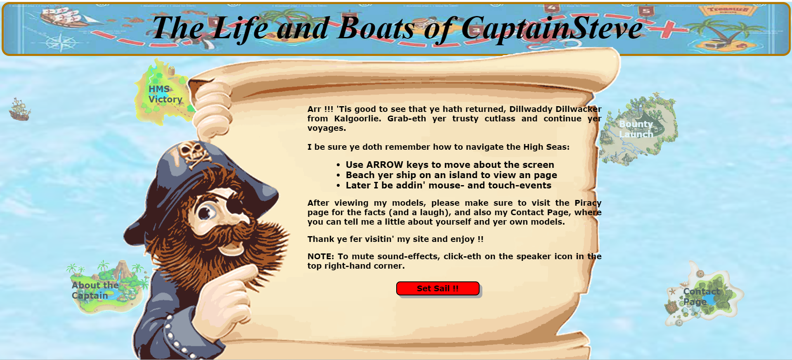The site's standout feature is an innovative navigation system disguised as a maritime adventure. Users guide their vessel across a rolling ocean to discover different content islands, replacing traditional menu navigation with an interactive experience. When visitors "land" their ship on an island, they're transported to content featuring detailed information about historic wooden ship models.
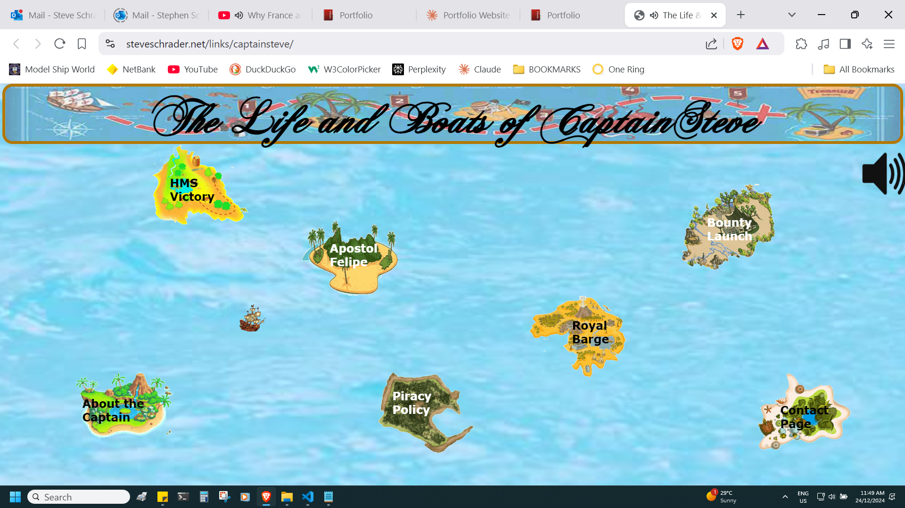The immersive experience is enhanced by animated ocean effects and ambient maritime sounds - gentle waves lapping against the shore and seagulls calling overhead - creating an atmospheric backdrop for exploring the content. Users can control this soundscape through a custom-built mute function.
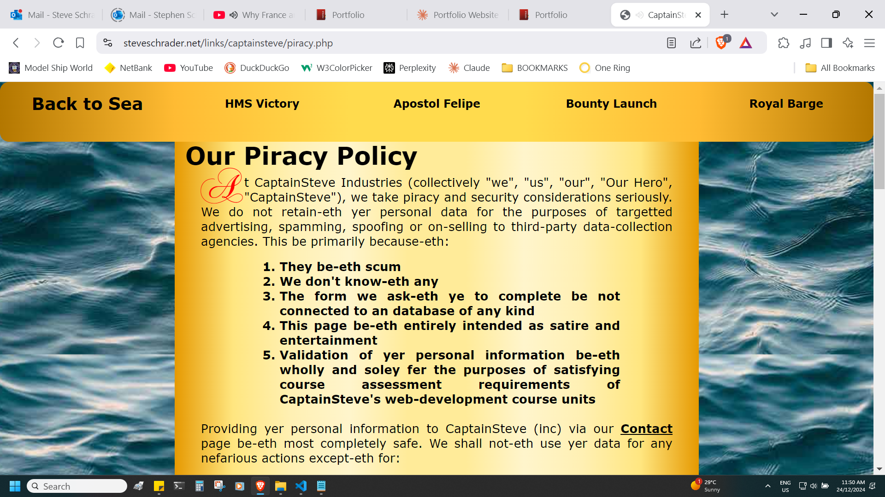This project marked a significant milestone in my development journey, particularly with JavaScript. Driven by a specific vision for the site, I spent the summer of 2022/23 diving deep into additional JavaScript tutorials and techniques, expanding my programming skills well beyond the basic curriculum.
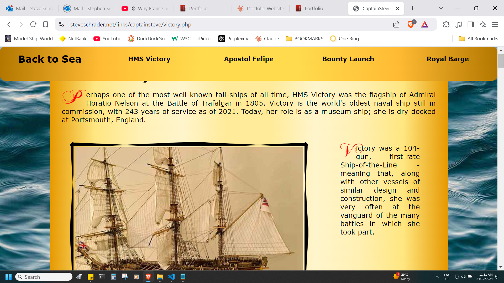The content itself draws from my active participation in the Model Ship World community, featuring detailed photographs, historical information, and insights into model-building techniques. Each section provides visitors with a comprehensive look at this fascinating hobby.
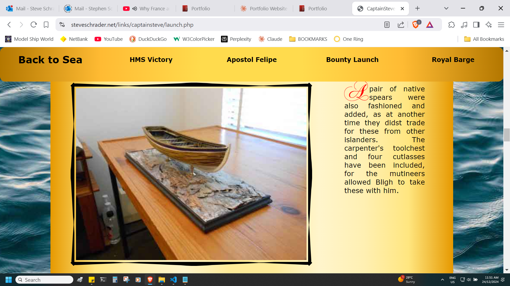In addition to the JavaScript code, CaptainSteve was developed using HTML, CSS, and PHP. The site, first launched in 2022, continues to serve as a testament to combining technical skills with personal passion.
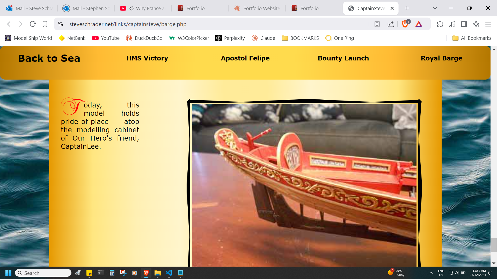You can experience this early work - a personal favourite - by visiting the live site through the Links tab at the top of this portfolio. Future plans include expanding the navigation system to incorporate touch-screen interactions, making the experience more accessible across different devices.
This Python application, developed as part of a data analysis unit, combines database operations with string manipulation to explore the fascinating world of word patterns. The program takes user input and performs a two-stage verification process: first confirming the word's existence in a dictionary database, then analyzing its letters to uncover hidden patterns.

The application efficiently searches through thousands of dictionary entries to find all possible word combinations using the same letters as the input word. A unique feature is its palindrome detection system, which not only identifies palindromes but also distinguishes between 'real' palindromes (eg: "radar") and 'pseudo' palindromes (words that become palindromes when rearranged).

The project demonstrates practical applications of database integration, algorithm optimization, and string manipulation techniques while providing an engaging way to explore the English language's flexibility. The clean, command-line interface makes the tool accessible while highlighting the power of Python for text processing applications.
The Video Player app was built as the final assessment for the Advanced Python programming class in 2023. The remit was to construct an app that could search a local file system for image and video files, and then display and play these. The project was written in Python using the PyQt5 library.

The application demonstrates strong file system integration, capable of locating and managing multiple media formats. It handles video files in WMV and AVI formats, while also supporting various image formats including JPG, GIF, and PNG files, making it a versatile media management tool.

Using PyQt5's robust framework, I developed a clean and intuitive user interface that allows seamless navigation through media files. The player includes standard media controls for video playback, as well as the option for dark/light mode viewing while image viewing includes basic display functionality.

The project showcases both technical proficiency in Python programming and practical application development skills, combining file system operations, media handling, and user interface design into a cohesive application for everyday use.

PLUMS (Please Level Up My Skills) was an ambitious project designed to help potential TAFE students assess their readiness for various courses. As part of a development team, I was tasked with creating a sophisticated quiz system that would evaluate prerequisite knowledge across multiple disciplines.

During the first semester, our team was assigned this project as a major component of our final assessments. The system needed to handle quizzes across diverse fields including IT, Automotive, Fashion Design, Architectural Drafting, Graphic Design, Computer Animation, Catering, and Facility Management, with complexity levels ranging from Certificate III to Advanced Diploma.

Recognizing the technical challenges ahead, I dedicated my 2021/22 summer break to intensive self-study of Laravel, focusing particularly on its database management capabilities. This commitment to expanding my technical knowledge proved invaluable as I tackled the complex database architecture.

The database structure I developed supported a dynamic quiz system featuring randomized questions and multiple-choice answers. One of the key technical challenges was implementing cross-table searches across the application's seven interconnected database tables, ensuring smooth data retrieval and management.

A notable feature of the system was its automated assessment capability. Upon quiz completion, the application would calculate percentage scores and automatically email results to both the student and the quiz-authoring lecturer, providing immediate feedback on knowledge gaps and readiness levels.

The project required careful attention to user roles and permissions, as lecturers needed specialized access to create and modify quizzes while maintaining security and data integrity. Although I was later reassigned to a different project due to class size changes, the experience gained in Laravel development proved invaluable.

This project showcased my ability to tackle complex database challenges and adapt to enterprise-level frameworks, skills that continue to influence my approach to web development projects.
Shopper2 represents my first venture into React development, created after extensive tutorial study to understand this powerful JavaScript framework. The project served as a practical application of React fundamentals while creating a useful shopping list management tool.
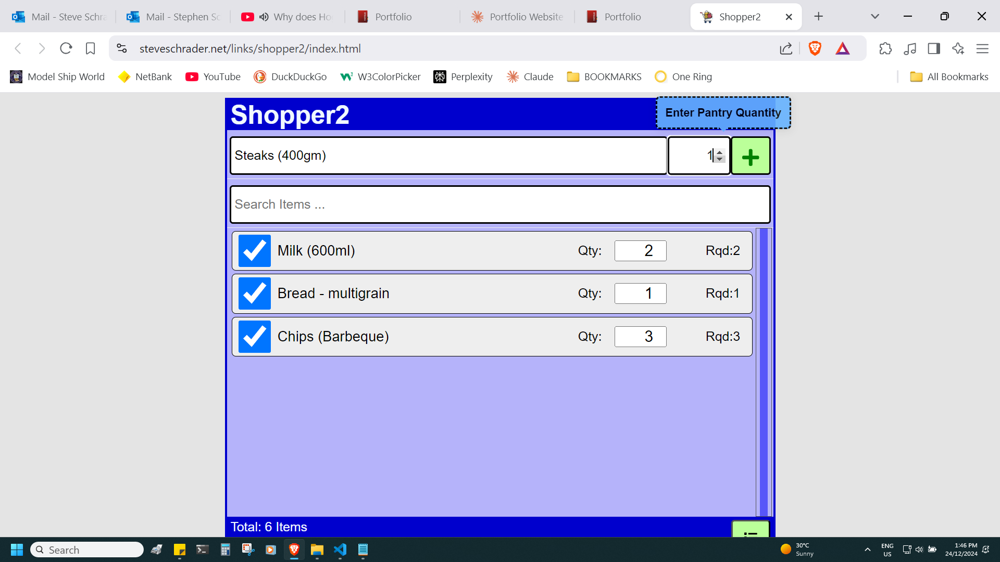The application leverages multiple React hooks including useState for state management, useEffect for side effects, useContext for global state, and useRef for direct DOM manipulation. The implementation of these hooks demonstrated my growing understanding of React's component-based architecture and state management principles.
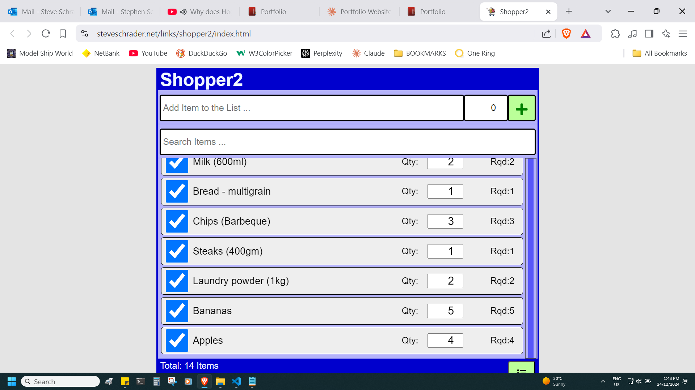A standout feature is the drag-and-drop functionality, allowing users to reorder items to match their supermarket's layout. This was implemented using React's Reorder component, while useCallback was employed to create custom scrollbars, enhancing the user experience during list manipulation.
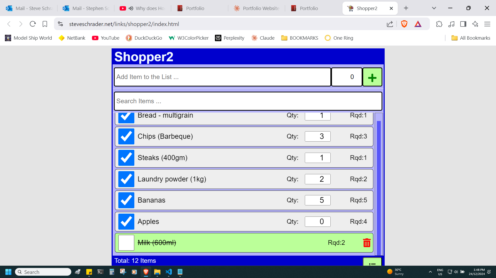The app maintains data persistence through local storage, ensuring that shopping lists survive browser refreshes. Users can add new items with their desired pantry quantities, modify existing entries, and delete items as needed. A running total at the bottom of the screen provides quick insight into list size.
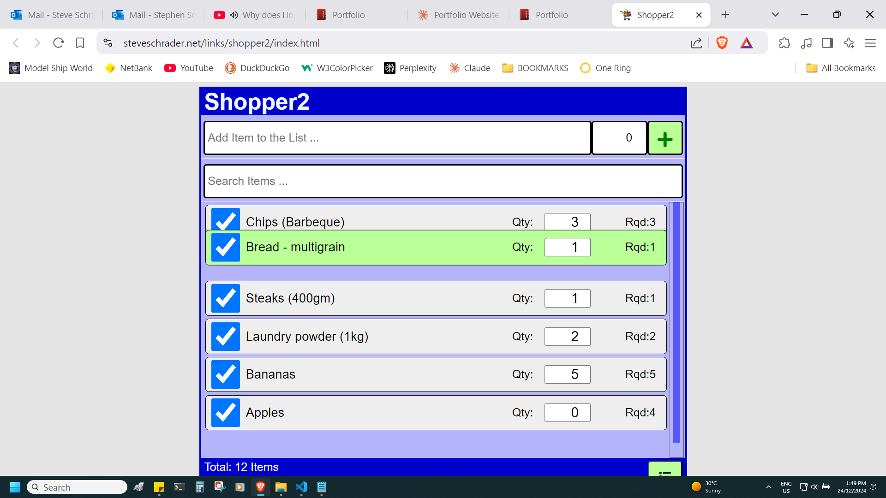The printing functionality, implemented using the useReactToPrint hook, converts the dynamic web interface into a shopping-friendly printed format through custom CSS styling. This feature bridges the gap between digital organization and practical shopping use.
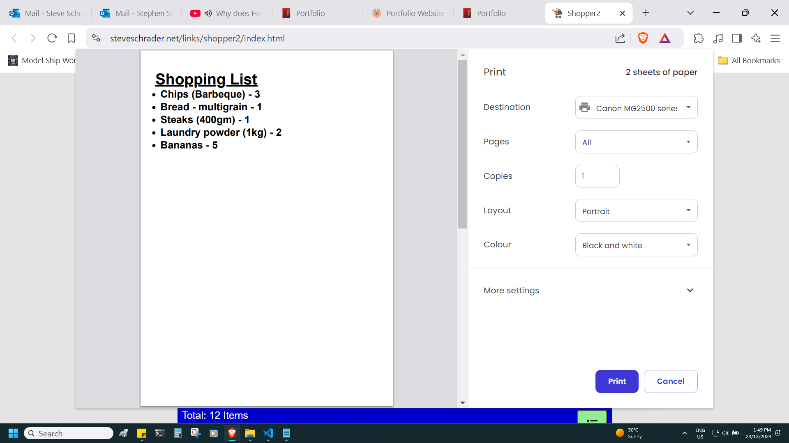While seemingly straightforward, this project served as a crucial learning experience in React development, covering essential concepts like component lifecycle, state management, user interaction, and DOM manipulation. It demonstrates how fundamental React principles can be applied to create practical, user-friendly applications.
One Ring Rentals represents the culmination of my Diploma in Web Development, showcasing advanced web development techniques through a full-featured property rental website. Built using React and NextJS, the project demonstrates integration with modern web technologies including Firebase for database management and Github for image repository hosting.
The home page features a custom-developed image carousel, highlighting key properties while demonstrating advanced JavaScript functionality. Below this, users can access a sophisticated search system that filters properties based on specific criteria including bedroom, bathroom, and garage numbers. Search results are dynamically presented with routed links to detailed property pages.
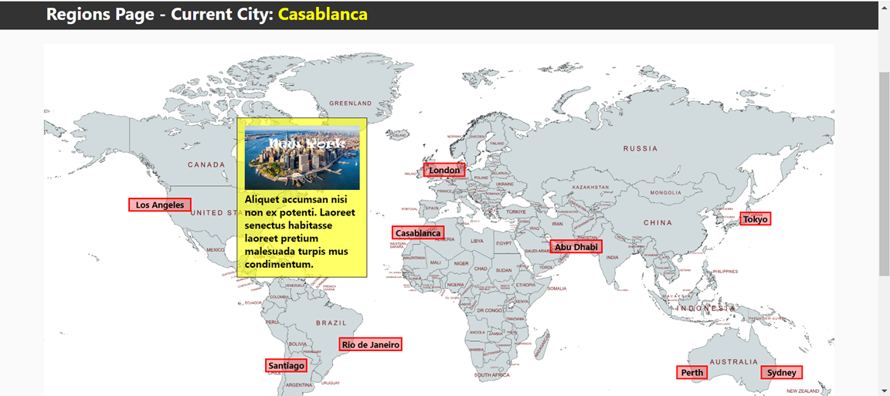A standout feature is the interactive Regions page, displaying a world map overlaid with a custom grid system marking available rental properties. This visual representation provides an intuitive way for users to explore property locations, while demonstrating advanced image mapping and coordinate system implementation.
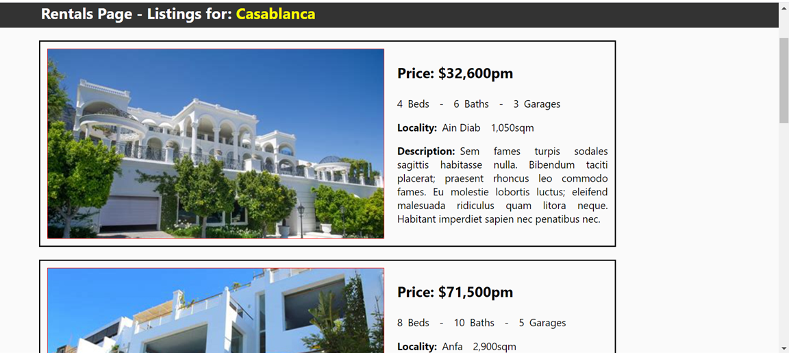The project's architecture leverages NextJS's dynamic routing capabilities, creating individual pages for specific rental properties. When users select a location, the Rentals page efficiently queries the Firebase database to display all available properties for that area, complete with detailed information and high-quality images served from the Github repository.
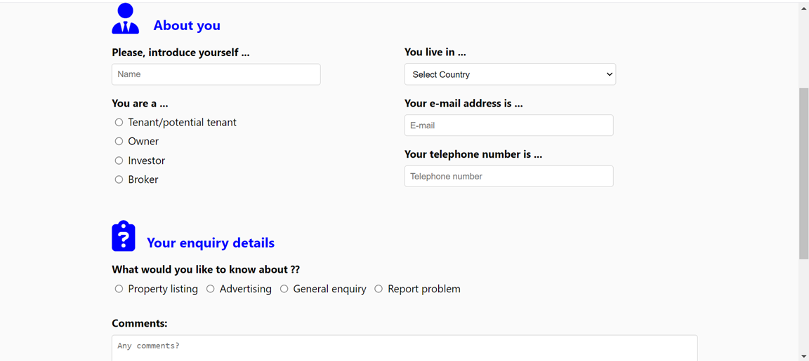User interaction is facilitated through a professionally designed contact form, allowing potential renters to submit property inquiries. The form includes input validation and data processing capabilities, ensuring reliable communication between users and property managers.
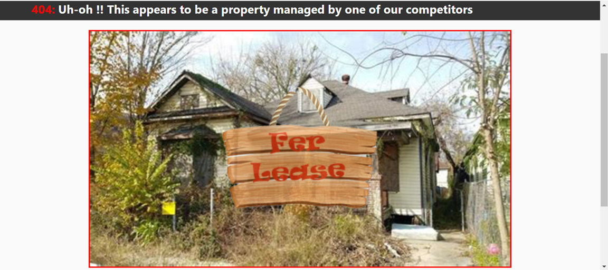The project serves as a comprehensive demonstration of modern web development practices, combining front-end frameworks, database integration, image management, and responsive design into a cohesive, professional application. Even the 404 error page was crafted with attention to detail, incorporating humour while maintaining professional functionality.
After two decades in the transport industry, I made a deliberate choice to pursue my passion for technology and launch a career in Programming and Web Development.
I am now looking to launch my new IT career ...
Whilst I am new to the tech industry, my extensive professional background has equipped me with valuable transferable skills. Years of managing complex logistics and customer relationships have honed my ability to work both independently and as part of a team. I've developed strong communication skills through daily interactions with clients and colleagues at all organizational levels, and I bring a proven track record of reliability and professionalism.
Critical thinking and problem-solving were a constant factor in working as a Fleet Controller - these skills that have been further refined through my technical studies. The challenges of software development have taught me to approach problems methodically, often finding that the willingness to step back and re-evaluate leads to more elegant solutions. This combination of professional experience and technical training has prepared me to contribute effectively in a development role.
At some point, Steve's parents met. By all accounts they seem to have gotten on quite well. Some other stuff also happened.
In April, 1994, my time in local transport commenced when I started as a courier driver for Skippers Transport. Like most drivers I was an owner-operator, delivering urgent parcels, envelopes, packages and more. As an owner-driver, I was responsible for maintaining good client relations, my own run-sheets, log-books and tax records.
Having operated as a de-facto stand-in two-way operator for some time, in October of 1996 I took on a role as the AM Despatcher whilst with Skippers Transport. In this capacity, I would log-in drivers as they commenced for the day, and operated as bookings clerk and dispatcher until the full-time staff started work.
September, 2005, saw me taking a role working alongside my brother as a railway maintenance worker for John Holland Rail. Duties included re-sleepering projects in Perth on the Armadale line and Kalgoorlie; building turn-outs in Esperance; and operating welding machinery on the Perth-Mandurah rail project.
In April of 2007, I returned to working as an owner-operator courier driver, this time with Fasta Couriers. Duties and tasks similar to previous roles in this industry.
A chance conversation mid-2009 led to me accepting an internal position as a full-time Fleet Controller working with Fasta Couriers. As part of Fasta's team of controllers, I would co-ordinate drivers and bookings across north and south city divisions with other dispatchers. Duties in this role included operating as telephonist and bookings clerk, as well as aiding clients and drivers with any queries.
While still working as a fleet-controller, I began driving for Secure Document Destruction. This was a subsidiary of the Fasta group. In this role I would collect bins of documents for recycling, and deliver these to a processing plant located in Landsdale.
See Studies section above.
I continued to work on a part-time basis as a Secure Document Driver, since beginning full-time study.
Time to find work ...
If you are viewing this site as a potential employer, then you can use this PDF link to download Steve's resume.

Thank you for taking the time to read a little about me.
I am now eager to apply my newly, learned skills - coupled with a proven work ethic - to contribute effectively for a forward-thinking employer. I am excited at the prospect of gaining practical experience, honing my skills, and making meaningful contributions to your company.
Should you wish to get in touch with any questions -- or to offer that Dream Job -- you can contact me directly by completing the Contact form below.